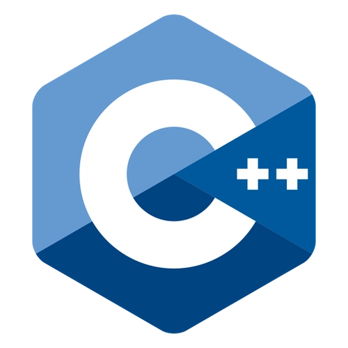

Compiled Languages
Compiled languages are transformed into machine code that a computer's processor can execute directly. They generally result in faster execution times compared to interpreted languages. These languages are typically used in performance-critical applications. Some of the well-known compiled languages include C, C++, Rust, and Go. C is a general-purpose language that has been around since the early 1970s. C++ is an extension of C with object-oriented features. Rust focuses on safety and concurrency, making it ideal for systems programming. Go is known for its simplicity and efficiency.
- C: General-purpose, procedural language
- C++:  General-purpose, object-oriented language
- Rust:
 Systems programming language focused on safety
Systems programming language focused on safety - Go:
 Statically typed, compiled language
Statically typed, compiled language